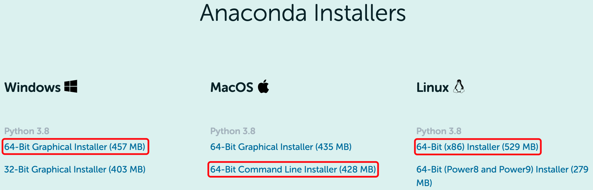

Anaconda¶
Anaconda 是一个用于科学计算的 Python 发行版，支持 Linux、macOS 和 Windows。其提供了方便使用的包管理器和环境管理器。
建议所有 Python 用户使用 Anaconda 而非 Linux 或 macOS 系统自带的 Python。
安装¶
下载 Anaconda
进入 Anaconda 官方下载页面，会看到类似下图的下载页面。根据自己的系统选择对应的安装包（通常选择下图中红框圈出的安装包）。

若官方下载速度较慢，可以直接从清华大学 Anaconda 镜像下载。访问 https://mirrors.tuna.tsinghua.edu.cn/anaconda/archive/，找到文件名类似
Anaconda3-2020.11-Linux-x86_64.sh或Anaconda3-2020.11-MacOSX-x86_64.sh的文件。其中2020.11为 Anaconda 版本的发行日期，选择最新版本即可。安装 Anaconda
直接双击安装包即可安装。
$ bash Anaconda3-2020.11-Linux-x86_64.sh
$ bash Anaconda3-2020.11-MacOSX-x86_64.sh
Anaconda 默认会安装到
$HOME/anaconda3下，在安装过程中可以设置为其他路径。安装通常需要几分钟时间，在安装的最后会出现:
Do you wish the installer to initialize Anaconda3 by running conda init? [yes|no] [yes] >>>
建议输入
yes，此时安装包会向当前 SHELL 的配置文件（如~/.bashrc或~/.zshrc）中写入conda初始化语句。测试安装
打开一个新的终端，在终端中输入
python，输出中看到 Anaconda, Inc. 字样即代表安装完成:$ python Python 3.8.5 (default, Sep 4 2020, 02:22:02) [Clang 10.0.0 ] :: Anaconda, Inc. on darwin Type "help", "copyright", "credits" or "license" for more information. >>>
常用命令¶
Anaconda 中提供的 conda 命令可以用于安装 Python 包、管理虚拟环境，其详细用法见
conda 官方文档。此外，也可以使用 Python 自带的工具 pip 来安装 Python 包，其详细用法见
pip 官方文档。我们建议尽可能使用 conda 来安装 Python 包，仅在 Anaconda 没有提供需要的程序包时才使用 pip 来安装。以下仅介绍常用的命令。
更新 conda 和 Anaconda:
$ conda update conda
$ conda update anaconda
添加 conda 的第三方软件包源 conda-forge:
$ conda config --add channels conda-forge
创建虚拟环境:
# 虚拟环境名为 seismo-learn，初始 Python 版本与 base 环境相同
$ conda create --name seismo-learn
激活虚拟环境:
# 激活名为 seismo-learn 的虚拟环境
$ conda activate seismo-learn
取消激活当前虚拟环境:
$ conda deactivate
注解
安装 Anaconda 后，打开终端默认会激活 base 环境。不经常使用 Python 的读者可以通过如下命令取消此默认设置:
$ conda config --set auto_activate_base False
取消后，可以临时激活 base 环境:
$ conda activate base
重新激活此默认设置:
$ conda config --set auto_activate_base True
搜索模块:
$ conda search numpy
安装模块:
$ conda install numpy
更新模块:
$ conda update numpy
使用 pip 安装模块:
$ pip install numpy
加速下载¶
在中国使用 conda 或 pip 下载模块时，可能速度较慢，此时可考虑使用清华大学提供的 Anaconda 和 pypi 镜像以实现加速（pypi 是 pip 默认的软件包下载源）。具体用法见: